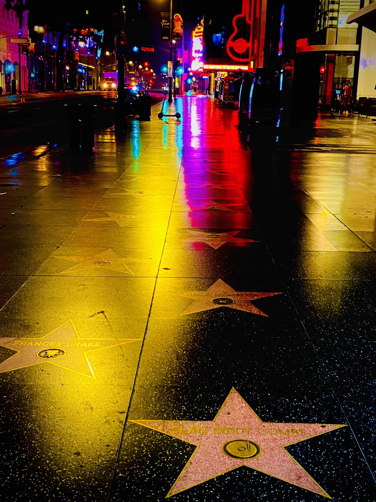

Facebook / LinkedIn Preview (with Profile Overlay):


Dubs The Creator - Digital Product Designer & Creative Director
Award-winning digital product designer creating innovative experiences for Fortune 500 companies. Featured projects: AT&T Mobile Platform, WebMD Health Portal, GameMax Gaming Suite, Rio Olympics Digital Experience.
dubsthecreator.com